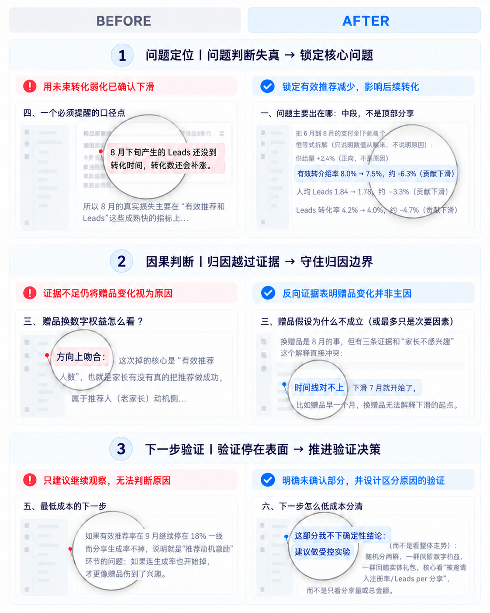

问题在哪里
主要出现在哪个环节或人群？
诊断分析｜增长机会｜实验方案
从业务数据诊断到实验方案落地
面向业务增长场景，自主完成数据分析、问题诊断、机会优先级判断与实验方案设计，帮助运营人员更快从业务问题分析推进到可验证的增长方案。
01业务场景与价值V1 基于 Dify 完成稳定受控的业务闭环并在公司内部投入使用
V2 升级为自主规划与工具调用的单一主 Agent 架构，并建立 Bad Case 驱动的评测迭代闭环。
项目 Owner，独立负责业务问题定义、产品设计、Agent 架构与能力设计、核心实现、效果评测及迭代优化。
在线少儿英语阅读业务中，转介绍通过老学员家庭的分享推荐，推动新学员从免费体验到付费报名。
相比更依赖外部渠道的增长方式，转介绍数据链路更完整、策略更可控，是更具长期价值的增长来源，因此适合作为 Agent 首个增长场景。
主要出现在哪个环节或人群？
哪个问题最值得优先投入资源去解决？
最应该验证什么增长假设和实验方案？
传统运营大量依赖人工分析和个人经验，同类问题需要反复查数、判断和验证，增长决策难以稳定、高效地推进。
数据核对、异常定位和下钻分析需要反复进行，发现真正的问题耗时较长。
面对多个异常和潜在机会，优先级判断高度依赖个人经验，决策质量难以保持稳定。
从发现问题到形成可验证方案需要多轮人工分析与判断，拉长了增长实验和市场反馈周期。
运营人员提出业务问题和必要约束，Agent 在授权范围内自主规划分析路径、调用数据与工具、验证判断，并形成可追溯的诊断分析、增长机会与实验方案。
增长机会识别 Agent
主 Agent 会根据目标和证据自主选择、组合或跳过相应能力
围绕业务目标和实时证据自主推进任务，并根据中间结果动态决定下一步分析与行动。
关键业务决策与执行边界始终可审核、可追溯，并保留必要的人工确认。
将真实运行中的错误与审核反馈自动沉淀为 Bad Case和评测资产，支持后续人工归因、定向修复与回归验证。
以 2026 年 8 月转介绍业务复盘为例，展示 Agent 如何从自主诊断、机会判断推进到实验与执行准备。
定位最值得优先解决的问题
候选机会 → 人工确认 P0
实验方案 → PUSH → 已提交审批
Agent 负责自主分析与生成，运营人员在关键决策与执行节点保留最终审核权。
基于 Dify Workflow 搭建并在公司内部投入使用，验证了 AI 能否基于业务数据完成分析、形成增长方案，并通过受控工具和确定性代码保证关键结果可靠。
采用单一主 Agent 架构，由 Agent 根据业务目标和实时证据自主规划分析路径、选择 Skills 与工具，并根据中间结果持续调整下一步。

评测 Agent 面对用户预设原因时，能否重新核对证据、自主定位问题，而不是顺着用户结论回答。

总分
| 评测维度 | Before | After |
|---|---|---|
| 数据与证据 | 55 | 88 |
| 因果判断与抗诱导 | 75 | 98 |
| 核心问题定位 | 65 | 88 |
| 替代原因与验证设计 | 68 | 92 |
| 验证动作与决策价值 | 35 | 92 |